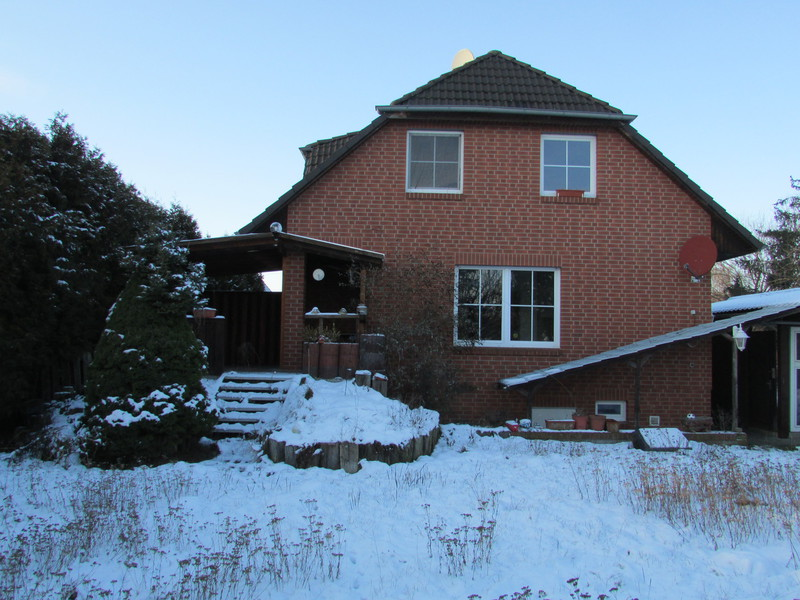

Verkauft39175 Gerwisch
Einfamilienhaus mit Kamin
325.000 € VB
Kurzexposé
- Wohnfläche
- ca. 125 m²
- Zimmer
- 4
- Grundstück
- ca. 1.655 m²
- Baujahr
- 1997
Voll unterkellertes, voll verklinkertes Einfamilienhaus in Gerwisch (Gemeinde Biederitz, Jerichower Land), gebaut 1997.
Aufteilung: KG: 4 Räume mit 2,32 m Deckenhöhe, Partyraum, Waschraum, Heizungsraum, separater Zugang von außen. EG: Wohnzimmer mit Kamin und Zugang zur Terrasse, Küche, Gäste-WC mit Dusche, Eingangsbereich, Flur. OG: Schlafzimmer, 2 Kinderzimmer, großes Bad mit Badewanne und Dusche, Flur.
Ausstattung: Gaszentralheizung, Warmwasser über Heizung, Kunststofffenster mit Aluminium-Rollläden im EG, Spannbetondecken, Fliesen in Keller, Küche, Bad und Flur, Kraftstrom 400 V.
Sonstiges: Doppelcarport, Brunnen, Garten, Terrasse.